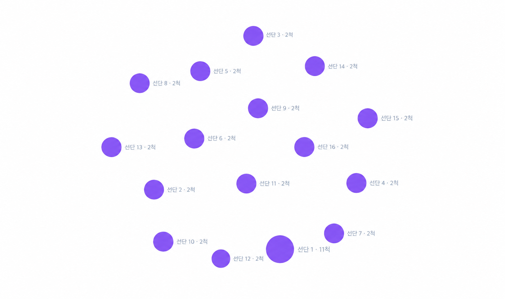

중국선단관계분석
29:54
어현상 (경위)
시스템 관리자 · ID/PW
선박
선단 그룹
소유자
항만
시장
냉동운반선(리퍼)
반복 조우 지점
소속 관계
운항·조우 관계
물류·이동 관계
거래·판매 관계
리퍼 운송 관계

선단 목록
| 선단 | 구성 선박 | 위험도 | 구분 |
|---|
본선·부속선 신고관계
관계 이벤트 타임라인 (일별)
일별 조우 이력 집계 API가 준비되면 표시됩니다 — 임의 수치를 표시하지 않습니다.